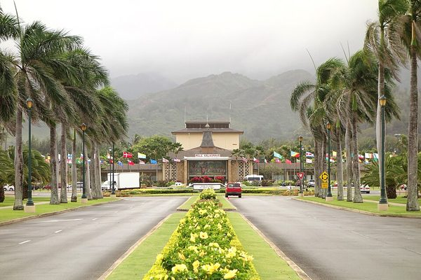

BYU-Hawaii
BYU-Hawaii sits right in the middle of Laie, with a wide palm-lined road leading up to the campus. Students come from all over the Pacific and Asia, which gives the school a friendly, international feel.

Photo: Wikimedia Commons, licensed CC BY 2.0.